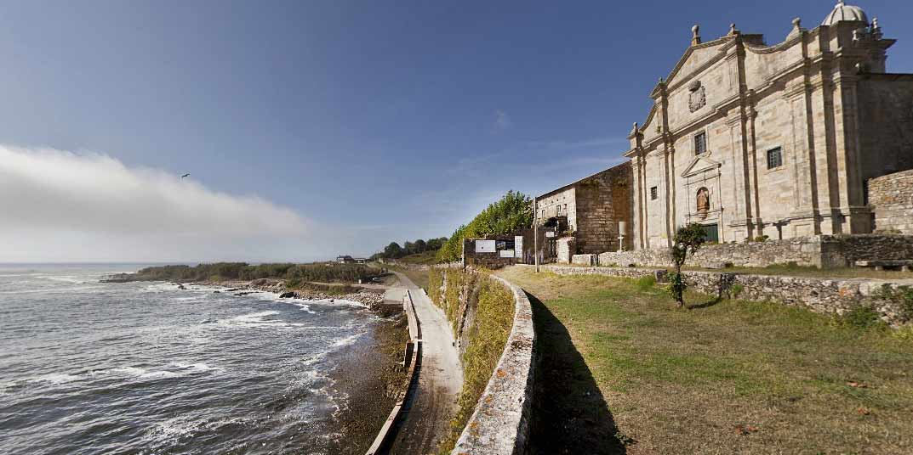
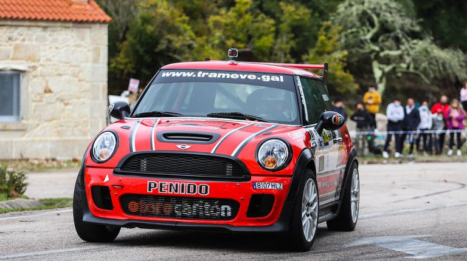
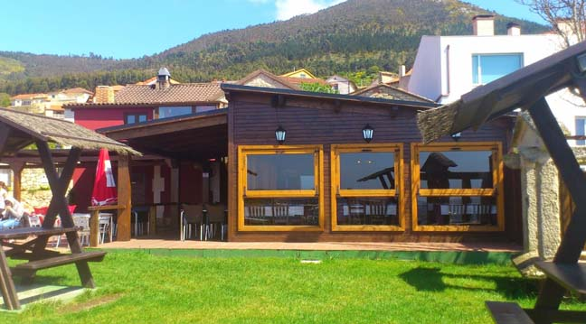
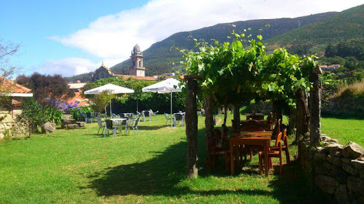

El Real Monasterio de Oia es un antiguo monasterio cisterciense fundado en el siglo XII, situado en la provincia de Pontevedra, en la comunidad autónoma de Galicia, España. Fue declarado Bien de Interés Cultural en 1931.
La Subida a Oia es una prueba de montaña perteneciente al Campeonato Gallego de Montaña en la que cada año se reunen más de medio centenar de vehículos para medirse en la increíble subida.
Tapería de tapas y restaurante
A Casa da Henriqueta goza de una ubicación excepcional, en el munucipio de Oia, a escasos metros de su precioso Monasterio y prácticamente al pie del océano Atlántico. Un lugar muy hermoso y que atrae a muchos visitantes y peregrinos que realizan el Camino Portugués por la costa no solo por las espectaculares vistas y el Monasterio.
